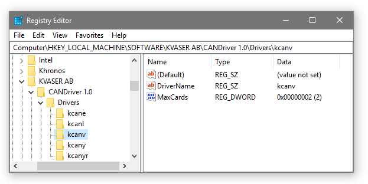

We recommend that you install the drivers first, then the Kvaser CANlibSDK, and last install the hardware.
Starting with CANLIB 4.0, all drivers and other executable files are digitally signed by Kvaser using an Authenticode™ certificate. Starting with CANlib 5.20 all drivers are also digitally signed by Microsoft.
The latest versions of documentation, software and drivers can be downloaded for free at www.kvaser.com/download.
Installing the Driver
When upgrading the drivers, we recommend that you remove all Kvaser hardware before installing the update. In that way you can be sure that no applications are using the hardware and that no files are locked during the installation. The installation will work just fine even if you don't remove the hardware, but you might have to reboot before the new drivers are actually used.
If you are upgrading the drivers, you should under all circumstances close all applications that use the CAN (or LIN) bus before starting the upgrade.
To install the drivers, run the driver installation package. At present it is called kvaser_drivers_setup.exe (direct link to latest version).
- When you start the installation program, Windows will ask for the password of an account with administrative rights, or, if you are already logged into an account with such rights, you will be presented with a "consent dialog" that asks you for permission to continue.
- Run the installation program. It will copy the driver files to your hard disk and register them with Windows.
- The first time you install new Kvaser hardware of a particular type, Windows will display the "Found New Hardware Wizard". Since all the required driver files are already installed on your computer, all you need to do is to click the Next and OK buttons to complete the wizard. Windows will search for the driver files and will discover them automatically.
- Note
- Windows might ask you if you want to look on Windows Update for updated drivers. We recommend that you answer "No, not this time" - it will save you time.
-
For the PCI and PCI Express cards you may need to reload the driver manually or restart your computer to get the system to use the new driver.
If you have trouble during installation, see Troubleshooting.
Installing Additional Virtual Devices
By default, the Windows installer installs two Virtual Devices. If you need more, you can manually install additional Virtual Devices up to a maximum of 16. The first step is to increase the registry key "Computer\HKEY_LOCAL_MACHINE\SOFTWARE\KVASER AB\CANDriver 1.0\Drivers\kcanv\MaxCards" to the number of Virtual Devices needed.

Maximum number of allowed Virtual Devices is controlled by the MaxCards Registry Setting
To increase the maximum number of allowed Virtual Devices to 8, copy the code below to a textfile, name it to "SetMaxKvaserVirtualDevices.reg", and execute the file by double clicking on it. You can also do the changes directly in the registry with Regedit.exe.
Windows Registry Editor Version 5.00
[HKEY_LOCAL_MACHINE\SOFTWARE\KVASER AB\CANDriver 1.0\Drivers\kcanv]
"MaxCards"=dword:00000008
"DriverName"="kcanv"
It is also possible to change the number of channels each Virtual Device has using the registry key "HKEY_LOCAL_MACHINE\SYSTEM\CurrentControlSet\Services\kcanv\Parameters\ChannelCount". By default, each Virtual Device has two channels.
Windows Registry Editor Version 5.00
[HKEY_LOCAL_MACHINE\SYSTEM\CurrentControlSet\Services\kcanv\Parameters]
"ChannelCount"=dword:00000002
- Note
- A reboot of the system is required after changing the ChannelCount setting.
To add a Virtual Device, start the "Hardware Wizard", by pressing "Win + R", type HDWWIZ and click OK. Go through the "Hardware Wizard" and select:
- Select "Install the hardware that I manually select from a list (Advanced)", and click Next
- Select "CAN Hardware (Kvaser)", and click next
- Scroll down in the list of device driver and select "Kvaser Virtual CAN Driver", click Next
- Complete the installation by clicking Next and Finish.
- Note
- If you try and install more than 16 Kvaser Virtual CAN Drivers, the "Hardware Wizard" will notify you that "This device is not working properly because Windows cannot load the drivers required".
Removing the driver
To remove the installed drivers, simply uninstall them using the Windows Control Panel.
- Note
- If you want to reinstall the drivers, a restart or power cycle may be needed in some cases between the uninstallation and the reinstallation. If the reinstallation fails, try to restart the computer and then run the installation again.
Installing Kvaser CANlib SDK
To install the Kvaser CANlib SDK, download and run the installation package. At present it is called canlib.exe (direct link to latest version).
- Note
- The CANlib SDK should not be installed on top of an already installed, older edition of CANlib SDK. You should install into a new directory, or uninstall the old version first.
-
Take a note of where you install the Kvaser CANlib SDK, since this is needed in order to setup your IDE, see Tutorials for some examples.
Removing Kvaser CANlib SDK
To remove the installed Kvaser CANlib SDK, simply uninstall using the Windows Control Panel.
Installing using silent mode
You can run the installation packages in silent mode, meaning that no user interaction is required. (Please note that user action still is needed when inserting the hardware). To do this, use the /S switch when starting the installation, e.g.
kvaser_drivers_setup.exe /S
The installer may exit with an exit code:
0 Normal execution (no error)
1 Installation aborted by user (cancel button)
2 Installation aborted by script
100 The virtual CAN driver, and/or the network enumerator driver, failed to start.
You should restart the computer and run the installation again.
101 Error: the installation needs administrative rights.
102 Error: the installation requires a later version of Windows.
103 Files were locked during the installation. A computer restart is required to
complete the installation.
- Note
- You will still get popup messages from Windows when the drivers are installed. This is by design - newer versions of Windows warn the user that privileged code is about to be installed. To avoid this you can do either of:
- Install Kvaser's certificate in the machine's Trusted Publisher store.
- Deploy Kvaser's certificate automatically in a Windows domain using a GPO.
- Click the Always trust software from Kvaser AB button.
-
These three things will give the same result, namely the installation of Kvaser's certificate in the Trusted Publisher store. The popup message will then not be showed.
Custom Driver Install
If you want to include the driver installation program with your application, or deploy them within your organization, you are welcome to do so but you are invited to contact us first at suppo.nosp@m.rt@k.nosp@m.vaser.nosp@m..com to discuss the technical details, join pre-release notification mailing lists and so on.
If you want to integrate the driver installation program into your own setup program, you can run it in silent mode by using the /S switch. All drivers will then be installed into their default location and no questions will be asked.
You can also run the installer with the /DISABLE switch to opt-out from installing certain parts of the driver package. The syntax is
/DISABLE=section[,section...]
Section is one of:
- GUI : the GUI tools, such as Kvaser Device Guide, the Blackbird configuration program, and the network device selector (also used toghether with Blackbird)
- STARTMENU : the shortcuts in the Start Menu.
- J2534 : registering of the J2534 driver.
- ALL : all of the above as well as any sections that might be added in future releases.
Example:
kvaser_drivers_setup_whcp.exe /S /DISABLE=GUI,J2534
Troubleshooting
- Windows will display the "Found New Hardware Wizard" the first time you plug in a USB device in a USB port where a device of this type hasn't been used before. This is a design feature in Windows. If the "Found New Hardware Wizard" is displayed, just click the Next and OK buttons and let Windows search for the drivers. It will find them automatically.
- If a device is marked with a yellow question mark in the Device Manager, try to right click at it and select Uninstall. Then physically remove the device and reinsert it, or reboot the computer. The "Found New Hardware Wizard" should then be displayed. As described above, just click the Next and OK buttons and let Windows reinstall the drivers automatically.
- If the installation still seems to be faulty, check the Control Panel | Kvaser Device Guide | Diagnostics tab. Look for error messages. (These are clearly labeled as such.)
- You should also check the Control Panel | Administrative Tools | Event Log. Errors from the driver routines are found in the System log. The Source column tells you which driver produced the error.
- Many installation problems are solved by a reboot followed by a reinstallation of the driver package.
- Many of our devices have LEDs that can tell you something about the health of the device. For example, a Kvaser Leaf or PCIcan II that flashes quickly (around one flash per second) with the green LED typically has a firmware configuration problem. The LED flashing is described in detail in the hardware manual of the device in question.
- There are a number of scripts installed together with the drivers that can be useful when solving some more awkward problems. Go to the directory where you installed the drivers (typically c:\Program Files\Kvaser\Drivers) and read the file 00readme-scripts.txt.
Using Debug DLLs
CANlib SDK is shipped with a number of debug DLLs and drivers; look in the …\sys\debug directory of the CANlib SDK. The debug DLLs will send information to the debugger (using the Win32 OutputDebugString API) and might help you in trouble-shooting your application or a particular installation.
To use the debug DLLs or drivers, you have to copy them yourself to the Windows system directory, overwriting the existing DLL or driver. Then remove and reinsert the hardware or restart the computer.
- Note
- Never attempt to deploy the debug DLLs or drivers with your application. End users are likely not to appreciate it.
To see the debug information, you can use the excellent dbgview.exe program freely available from http://technet.microsoft.com/sysinternals.